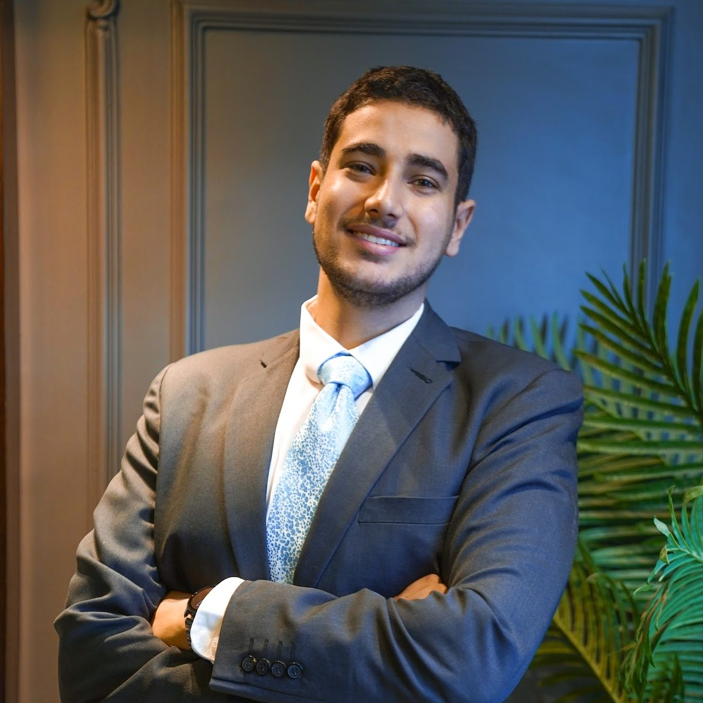

In photos
A few moments along the way.

Graduation, MIU, 2024

Research Challenge kickoff, 2024

Volunteering, 57357 Hospital

Cairo, 2026
The story behind the finance, the design, and the unusual combination of both.
I started as a painter, long before I knew what a DCF was. That instinct — for composition, for what makes something worth looking at twice — never left. It just found a second subject.
I studied Finance at Misr International University, and outside the classroom I was building the kind of track record that doesn't show up on a transcript: leading teams at AIESEC, debating in Model United Nations, organizing at TEDx. Rooms, not just spreadsheets. My thesis examined the effect of institutional quality on innovation — an early sign of the analytical instinct that would define everything after.
The first real test of analytical judgment came early — as a finalist in the CFA Society Egypt Research Challenge, competing against the top universities in the country, with my team recognized for outstanding investment research. I later returned to that same competition as a judge and mentor, on the other side of the table.
In parallel with finance, I spent serious hours on something most analysts never touch: training frontier AI models — GPT and Gemini — through Outlier, across many projects. It's an unusual credential to pair with valuation work, and it changes how I think about reasoning under uncertainty — the same discipline a DCF model demands of its assumptions.
Since graduating, I've worked across nearly every part of how capital actually moves. Two promotions within twelve months in my main advisory role — from financial analyst to senior investment advisor — alongside a parallel advisory practice covering the Saudi market, and an independent boutique handling everything from valuations to brand identity for founders and family businesses across fintech, healthcare, and FMCG.
Earlier still, I built the conventional foundation properly: internships at CIB Egypt and Banque du Caire, then later founded my own venture, Riptide, before the advisory work took its current shape.
I'm a CFA Level I candidate now and an Ambassador for CFA Society Egypt — still building the formal credential on top of the practitioner reps. The combination of finance, design, and AI evaluation isn't a pivot. It's the same eye, pointed at three different surfaces.
